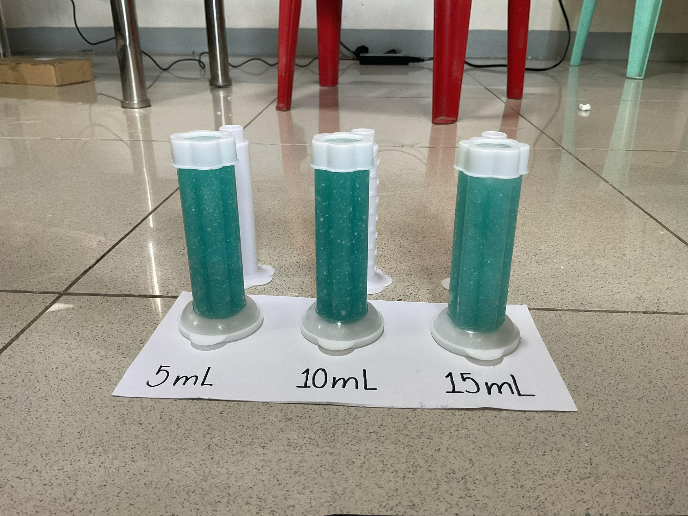
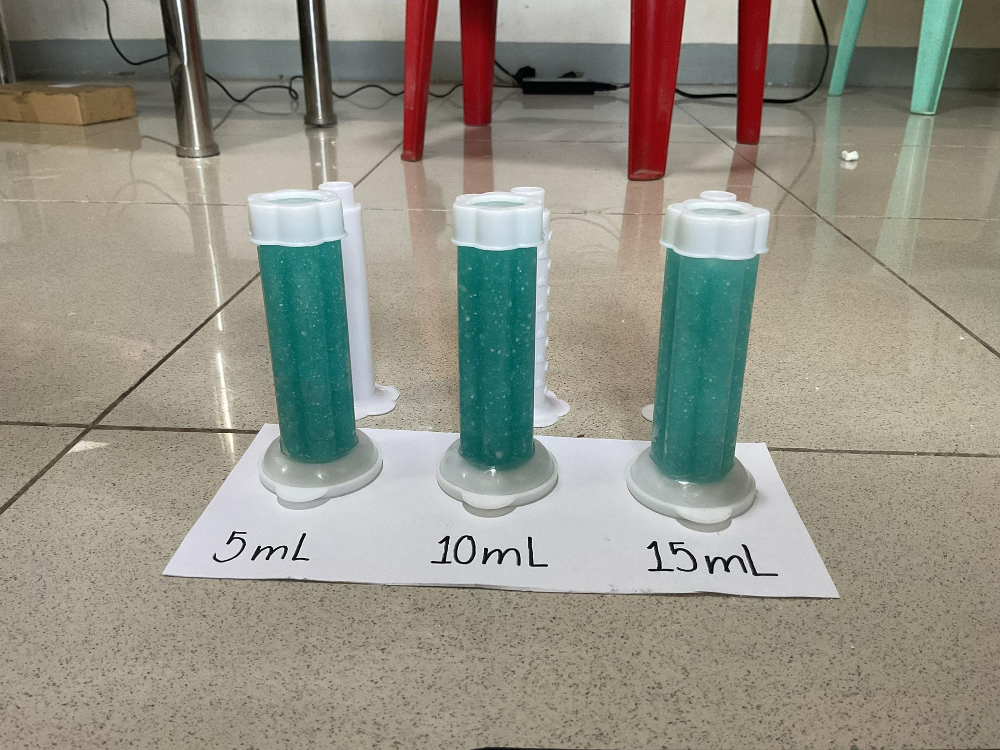

GADIEL MANALO
CS 1101
CS 1101
I’m Gadiel Manalo, currently a first-year Computer Science student at Batangas State University The National Engineering University - Alangilan Campus. Explore how my skills, projects, and aspirations contributes for a better world aligned with the Sustainable Ddevelopment Goals (SDGs).


With a passion for technology and innovation, I have developed a diverse skill set
spanning technical, creative, and interpersonal domains. This section showcases my
proficiency in programming languages, technical skills, and personal strengths that
empower me to approach challenges with creativity and problem-solving.
"Tell me and I'll forget; show me and I may remember; involve me and I'll understand."
- Chinese Proverb
Programming Languages: Python, C++, HTML, CSS
Technical Skills: Machine Learning, Web Development, Video Editing
Soft Skills: Leadership, Collaboration, Communication, Problem-solving
Others: Music, Gaming
Welcome to my Project Showcase! 🚀
Explore a variety of projects demonstrating creativity and innovation.
This page highlights a collection of innovative projects crafted with
passion and purpose. From problem-solving solutions to creative experiments,
each project is presented with insightful descriptions, and visuals
These projects demonstrates Sustainable Development Goals, aiming to leave a
positive impact on technology and community.
Dive in to see how these projects come to life and solve real-world challenges!
Project HEAL: An advocacy aligned with SDG 1 "No Poverty" entitled "Self-reliance Towards Improved Life Quality: Fighting Poverty".
The advocates aim to improve the quality of life among communities.
It has a goal to reduce poverty rate, empower the economy, restore human dignity
and strengthen men's abilities and skills. The advocacy group will disseminate
information issues concerning poverty and ways to alleviate/fight this problem.
Information on job listings/postings and skills training and workshops will be
the focus of the group. Through these efforts, the project
"Self-reliance Towards Improved Life Quality: Fighting Poverty" can strengthen
individuals' abilities and self-reliance.
Visit our page by clicking the image (website via google sites)

 

Project DEO-STAMP: An innovative solution aligned with SDG 11 (Sustainable Cities and Communities).
This study aims to develop more environmentally friendly and toxic free
when inhaled toilet deodorizers, specifically the Deo-Stamp, a Pomelo-based
stick-on or gel stamp Deodorizer. This has come to the aid of individuals’ terrible
matter regarding the sanitation and the smell of comfort rooms. Pomelo is its
main ingredient due to its citric acid, which is qualified as a cleaning property.
Unlike the harmful chemical components of commercial deodorizers, using this
natural ingredient promotes organic, ecological, and safer sanitation for
household and school toilet facilities.
Our Commitment to No Poverty & Sustainable Communities,
creating equitable opportunities and fostering resilient communities
are at the heart of sustainable development. This section showcases how my
projects, skills, and aspirations align with SDG 1: No Poverty and SDG 11:
Sustainable Communities.
Through innovation, collaboration, and problem-solving, I aim to
address economic disparities, promote equal access to resources,
and build sustainable, inclusive communities that ensure improved
living conditions and opportunities for all."


Our project, "Self-reliance Towards Improved Life Quality:
Fighting Poverty," is dedicated to addressing the root
causes of poverty by empowering communities with knowledge,
skills, and opportunities. The project focuses on improving
the quality of life among marginalized communities by:
Reducing the poverty rate through sustainable programs.
Restoring human dignity by creating opportunities for self-empowerment.
Providing job postings, skills training, and
workshops to equip individuals with economic
opportunities.
Moreover, the group conducts community outreach programs such as gift giving to alleviate immediate needs and build stronger community bonds. By disseminating information on poverty issues and strategies to combat it, this advocacy seeks to build self-reliance and confidence among individuals, helping them pave the way toward a sustainable future.
In part of advocating Sustainable Communities, we are proud to
create a Feasibility study on Deo-Stamp, an innovative and eco-friendly
deodorizer. This study focuses on:
Creating a Pomelo-based, toxic-free deodorizer
that promotes safer and greener sanitation.
Using natural citric acid properties from Pomelo, a non-toxic,
organic alternative to harmful chemical-based deodorizers.
Offering cleaner, safer alternatives for households
and schools, ensuring that sanitation needs are met without
compromising environmental health.
Additionally, our initiative has extended its efforts by engaging in community cleaning projects. This hands-on activity not only promotes environmental health but also fosters community cooperation and sustainability.